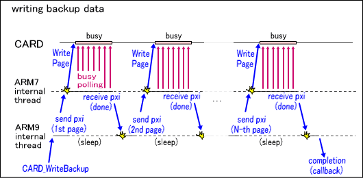

Backup Access (Overview)
Description
The backup device is connected to the SPI bus on a DS card. By conducting serial communications of commands through the IO register, operations such as state checks and data transfer are performed. The types and limitations of the prepared commands depend on the device type and size, but there are features below that are generally shared.
- The entire memory space is divided into fixed page sizes, and each page has an independent write count lifespan.
- If a write-related command is generated, the device enters a busy state until it finishes.
- Proportional to the write count accumulation, the period for the busy state gradually increases. Ultimately, completion will never occur within the guaranteed fixed time period.
- A data storage period for the entire device also exists, but does not depend on the write count.
Types of devices
The following are the main backup device types and their features that supported by the current CARD library.
| Types of devices | Features |
| EEPROM | Memory with standard features and relatively small capacity. |
| FLASH | Memory with relatively slow write, but large capacity. |
| FRAM | Superior for write counts. Also, it does not use sectors and does not enter a busy state when writing. |
There is nothing provided to detect which types of backup devices are loaded in the DS card. So, after the application has recognized which device type it will be using, the type must be specified with the CARD_IdentifyBackup function before using any backup access functions. You must make sure that ROM header information is determined beforehand, as indicated in the guidelines. This will prevent problems such as data being destroyed by carelessly accessing a DS card that is defined in detail. This is especially important for applications that will be executed by something other than the DS card, as in Single-Card Play. Under these conditions, restrictions in the CARD library work automatically and the card cannot be accessed until the CARD_Enable function is called. The ROM header information of the inserted DS card can be referenced with the CARD_GetRomHeader function.
Access function process flow
This is an explanation of the flow of operations after backup access functions are called.

- Most device commands related to data transfer are restricted to a fixed size, such as pages or sectors, so the CARD library automatically divides content specified by the user into several appropriately sized commands.
- Each divided command is executed in order. Command execution and the busy determination that follows needs to be processed from beginning to end directly by the CPU, so this operation is executed by a relatively low priority thread on the ARM7 component side.bc. Notifications of command issue requests are sent one at a time from ARM9 through PXI.
- When the command is finished in ARM7, ARM9 is notified of the result through PXI.
- If there are any remaining divided commands, another notification for a command issue request is sent from ARM9. The entire process is repeated until it completes, fails, or is cancelled with the CARD_CancelBackupAsync function. Because waiting for completion or processing reissue requests may take a long time as a result of memory copy, they are executed by an internal thread in the CARD library instead of with a PXI interrupt handler.
- When the operation is complete, a notification is sent to the source of the specified callback. The process result is referenced with the CARD_GetResultCode function as a CARDResult type enumerated value.
See Also
CARD Function List
Revision History
01/11/2006 Initial version.
CONFIDENTIAL